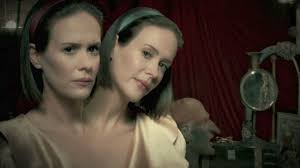
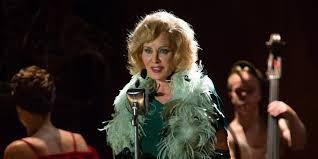
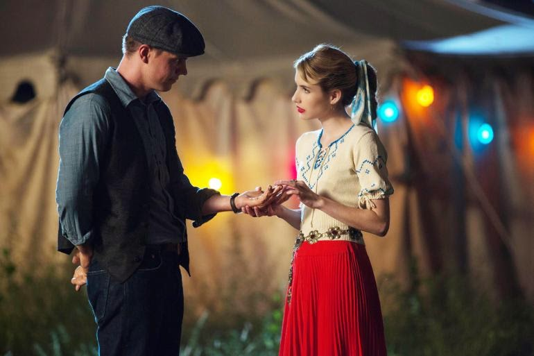

Rémségek cirkusza
Történet
A bevezető részben 1952-ben, Floridában járunk ahol egy bántalmazott sziámi ikerpárt kórházba szállítanak miután az anyjukat holtan találtak. Később a kétfejű testvérpárhoz Elsa Mars érkezik. Egy másik helyszínen Twisty, a torz bohóc megöl egy fiatal párt, majd egy családot és gyermeküket elrabolja. Elsa felfedi az ikerpár sötét titkát, de később beveszi őket a furcsa és torz szerzeteket összegyűjtő cirkuszába.A gyilkosságok után még mindig tart a nyomozás. Eltűnik egy nyomozó is aki utoljára a cirkuszban járt. A társulathoz csatlakozik az erőember és felesége a 3 mellű nő.
A gyilkosságok után még mindig tart a nyomozás. Eltűnik egy nyomozó is aki utoljára a cirkuszban járt. A társulathoz csatlakozik az erőember és felesége a 3 mellű nő.
Edward Mordrake előkelő családból lett mutatványos, majd őrült. Halloween éjszakáján megölte az összes társát, ezért a cirkuszosok nem lépnek fel és nem is tartanak próbát. A történet szerint ha Halloween mégis megteszik ő megjelenik és elvisz magával egy torz előadót. Elsa ezt buta legendának tartja így készül a fellépésre, de Edward csakugyan megjelenik...

Edward Mordrake minden cirkuszost meglátogat, hogy hallja a legsötétebb történetüket és megkeresse azt az egyet akit elvisz magával. A gyilkos bohócnak egy "rajongója" akad, aki a társa lesz és segédkezik az őrült tetteihez.
Egy morbid dolgokat kiállító múzeumnak újdonságra van szüksége, ezért Maggie beépül a cirkuszba, mint jósnő, Spencer pedig TV-s szakmában jártas embernek adja ki magát, így próbálva meg irányítani Elsa-t. A gazdag családból származó és elkényeztetett Dandy unalmában bekattan, majd a gyilkos bohócnak segédkezik. Később megöli a szolgálójukat.
Az ikrek Dandyhez kerülnek. Dot utálja, Bette viszont oda van érte. A cirkuszban úgy vélik Elsanak köze van az eltűnésükhöz. Maggie aki jövendőmondónak adja ki magát újabb áldozatot szemelt ki. Dandy elolvassa Dot naplóját amiből kiderül, hogy csak kényszerből maradnak, mert a fiú felajánlotta, hogy kifizeti a műtétet ami szétválasztaná a két lányt. Dandy ekkor kést ragad és utánuk indulna, de megjelenik Jimmy.
Jimmy elhozza az ikreket a fogságból. Megzsarolják Elsat, hogy intézzen nekik ezt-azt és ők hallgatnak arról, hogy eladta őket. Mivel Maggie nem tudta megölni egyik torz cirkuszost sem, ezért Spencer új embert keres, hogy beszerezhesse a torz alakokat gyűjtő múzeumnak a legújabb "árut".

Újabb tragédia történik a társulatnál: Pepper barátja meghal. Jimmyt elviszik a rendőrök, mert Dandy rákent minden gyilkosságot. Bette és Dot pénzt ad Maggie-nek, hogy keressen ügyvédet. Elsa elmeséli, hogy került a társulathoz Pepper, majd felkeresi egyetlen rokonát és nála hagyja. Pepper nővére egy gnóm babát szül, de férjével nem bírják elviselni őket. A férfi megöli a babát és Peperre kenik az egészet, akit bezárnak a Briarcliff Elmegyógyintézetbe.
Maggie bevall mindent és megmutatja Elsanak az egyik szörny testét a múzeumban. Dell és Spencer is lelepleződik. Elsa felkeresi azt az embert aki műlábat készített neki miután 3 náci levágta a lábát. (Itt is utalnak a 2. évadra, mert a 3 férfi közül az egyik Hans Gruper akit Dr. Arthur Ardenként ismerhettünk meg a Briarcliffben.) Megkéri hogy segítsen Jimmynek. A társulat bosszút tervez Elsa ellen, mert kiderült, hogy ő ölte meg Ethelt aki rájött hogy összejátszik Spencerrel.
Elsa eladta a cirkuszt Chesternek de zavarodott állapota miatt nem tartott sokáig a főnöksége. Ezután Dandy vette át a vezetést, aki ugráltatja és lenézi a többieket. A torzszülottek lépésre szánják el magukat. Jimmy hazatér de szörnyű dolgot kell tapasztalnia. Előre ugorva az időben Elsa Hollywoodban sikeres tv-s szereplő lett saját műsorral, de a háttérben nem minden olyan tökéletes. Régi barátja (aki falábat készített neki) elvesztése után nem maradt senkije, sőt még a bizarr múltja is utoléri. Elkeseredésében Halloweenkor műsort próbál, így megidézi Edward Mordrake-et, hogy vigye magával de nem teszi meg, inkább egy olyan helyre küldi ahol örökké együtt lehet a társulattal, ahol igazi sztár válhat belőle. Később látható, hogy Desiree-nek férje és gyerekei vannak valamint Jimmy és az ikrek együtt élnek és nekik is gyermekük születik.

Főszereplők
- Jessica Lange - Elsa Mars
- Evan Peters - Jimmy Darling
- Matt Fraser - Paul
- Erika Ervin - Amazon Eve
- Sarah Paulson - Bette Tattler/Dot Tattler